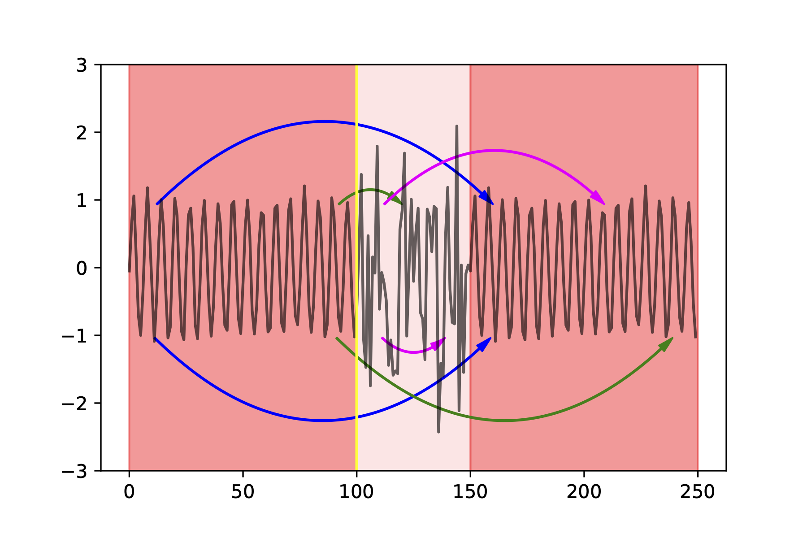

<!DOCTYPE html>
<html lang="en">
  <head>
    <meta charset="utf-8" />
    <meta name="viewport" content="width=device-width, initial-scale=1.0, maximum-scale=1.0, user-scalable=no" />

    <title></title>
    <link rel="stylesheet" href="dist/reveal.css" />
    <link rel="stylesheet" href="dist/theme/white.css" id="theme" />
    <link rel="stylesheet" href="plugin/highlight/zenburn.css" />
	<link rel="stylesheet" href="css/layout.css" />
	<link rel="stylesheet" href="plugin/customcontrols/style.css">


    <script defer src="dist/fontawesome/all.min.js"></script>

	<script type="text/javascript">
		var forgetPop = true;
		function onPopState(event) {
			if(forgetPop){
				forgetPop = false;
			} else {
				parent.postMessage(event.target.location.href, "app://obsidian.md");
			}
        }
		window.onpopstate = onPopState;
		window.onmessage = event => {
			if(event.data == "reload"){
				window.document.location.reload();
			}
			forgetPop = true;
		}

		function fitElements(){
			const itemsToFit = document.getElementsByClassName('fitText');
			for (const item in itemsToFit) {
				if (Object.hasOwnProperty.call(itemsToFit, item)) {
					var element = itemsToFit[item];
					fitElement(element,1, 1000);
					element.classList.remove('fitText');
				}
			}
		}

		function fitElement(element, start, end){

			let size = (end + start) / 2;
			element.style.fontSize = `${size}px`;

			if(Math.abs(start - end) < 1){
				while(element.scrollHeight > element.offsetHeight){
					size--;
					element.style.fontSize = `${size}px`;
				}
				return;
			}

			if(element.scrollHeight > element.offsetHeight){
				fitElement(element, start, size);
			} else {
				fitElement(element, size, end);
			}		
		}


		document.onreadystatechange = () => {
			fitElements();
			if (document.readyState === 'complete') {
				if (window.location.href.indexOf("?export") != -1){
					parent.postMessage(event.target.location.href, "app://obsidian.md");
				}
				if (window.location.href.indexOf("print-pdf") != -1){
					let stateCheck = setInterval(() => {
						clearInterval(stateCheck);
						window.print();
					}, 250);
				}
			}
	};


        </script>
  </head>
  <body>
    <div class="reveal">
      <div class="slides"><section ><section data-markdown><script type="text/template"><!-- .slide: class="drop" data-background-opacity="0.2" data-background-image="figs/PeterCartoon-square.jpg" -->
<div class="" style="position: absolute; left: 0px; top: 0px; height: 700px; width: 960px; min-height: 700px; display: flex; flex-direction: column; align-items: center; justify-content: center" absolute="true">

# Explainable AI, explained
<br><br>
<br><br><br>

### Peter Flach, University of Bristol
</div></script></section><section data-markdown><script type="text/template"><!-- .slide: class="drop" -->
<div class="" style="position: absolute; left: 0px; top: 0px; height: 700px; width: 960px; min-height: 700px; display: flex; flex-direction: column; align-items: center; justify-content: center" absolute="true">

## Outline
1. &shy;<!-- .element: class="fragment" data-fragment-index="1" -->Setting the scene
1. &shy;<!-- .element: class="fragment" data-fragment-index="2" -->Explainability for time series
1. &shy;<!-- .element: class="fragment" data-fragment-index="3" -->Actionable counterfactuals
1. &shy;<!-- .element: class="fragment" data-fragment-index="4" -->XAI tools
1. &shy;<!-- .element: class="fragment" data-fragment-index="5" -->Explainability fact sheets
1. &shy;<!-- .element: class="fragment" data-fragment-index="6" -->Multi-class explanations
</div></script></section></section><section ><section data-markdown><script type="text/template"><!-- .slide: class="drop" -->
<div class="" style="position: absolute; left: 0px; top: 0px; height: 700px; width: 960px; min-height: 700px; display: flex; flex-direction: column; align-items: center; justify-content: center" absolute="true">

# Setting the scene 
This is how Kacper Sokol describes explainability in his PhD thesis: 
<style>
	.red-border{
		border: 5px solid red;
	}
</style>
<div class="block">

$
\texttt{Explainability} = \\
\underbrace{%
\texttt{Reasoning} \left( \texttt{Transparency} |  \texttt{Background Knowledge} \right)%
}_{\textit{understanding}}%
$
</div>

<!-- .element: class="red-border" -->
<div class="block">

"which defines `$\texttt{Explainability}$` as the **process** of deriving *understanding* – i.e., extracting meaning – through `$\texttt{Reasoning}$` applied to `$\texttt{Transparent}$` insights distilled from a data-driven predictive system that are adjusted to the explainee’s `$\texttt{Background Knowledge}$`." 
</div>

 <!-- .element: class="fragment" -->

[Explainability is in the mind of the beholder (arxiv)](https://arxiv.org/abs/2112.14466)
</div></script></section><section data-markdown><script type="text/template"><!-- .slide: class="drop" -->
<div class="" style="position: absolute; left: 0px; top: 0px; height: 700px; width: 960px; min-height: 700px; display: flex; flex-direction: column; align-items: center; justify-content: center" absolute="true">

## A simple geometric view


- in black: decision boundary and weight vector <!-- .element: class="fragment" -->
- in red: feature vector of instance currently on the negative side <!-- .element: class="fragment" -->
- in blue: recourse/counterfactual (closest point on decision boundary) <!-- .element: class="fragment" -->
</div></script></section></section><section ><section data-markdown><script type="text/template"><!-- .slide: class="drop" -->
<div class="" style="position: absolute; left: 0px; top: 0px; height: 700px; width: 960px; min-height: 700px; display: flex; flex-direction: column; align-items: center; justify-content: center" absolute="true">

# XAI for time series


[Sivill and Flach, AISTATS 2022](https://proceedings.mlr.press/v151/sivill22a.html)
| [github](https://github.com/TortySivill/LIMESegment)
| [slideslive](https://slideslive.com/38980514/limesegment-meaningful-realistic-time-series-explanations?ref=recommended)
</div></script></section><section data-markdown><script type="text/template"><!-- .slide: class="drop" -->
<div class="" style="position: absolute; left: 0px; top: 0px; height: 700px; width: 960px; min-height: 700px; display: flex; flex-direction: column; align-items: center; justify-content: center" absolute="true">

## What's special about time series?
1. &shy;<!-- .element: class="fragment" data-fragment-index="1" -->We need meaningful "super segments".
1. &shy;<!-- .element: class="fragment" data-fragment-index="2" -->We need to be able to "switch off" segments.
1. &shy;<!-- .element: class="fragment" data-fragment-index="3" -->We need to be able to define local neighbourhoods through similarity.
</div></script></section><section data-markdown><script type="text/template"><!-- .slide: class="drop" -->
<div class="" style="position: absolute; left: 0px; top: 0px; height: 700px; width: 960px; min-height: 700px; display: flex; flex-direction: column; align-items: center; justify-content: center" absolute="true">

## Segmenting time series


Segments and changepoints are constructed by considering similarity relations that preserve adjacency.
</div></script></section><section data-markdown><script type="text/template"><!-- .slide: class="drop" -->
<div class="" style="position: absolute; left: 0px; top: 0px; height: 700px; width: 960px; min-height: 700px; display: flex; flex-direction: column; align-items: center; justify-content: center" absolute="true">

## Background vs. foreground


<div class="block">

<!-- .element: class="fragment" -->
**Background** components are present throughout.
</div>


<div class="block">

<!-- .element: class="fragment" -->
**Foreground** components can then be "switched off" as required for LIME. 
</div>
</div></script></section><section data-markdown><script type="text/template"><!-- .slide: class="drop" -->
<div class="" style="position: absolute; left: 0px; top: 0px; height: 700px; width: 960px; min-height: 700px; display: flex; flex-direction: column; align-items: center; justify-content: center" absolute="true">

## Similarity


<div class="block">

<!-- .element: class="fragment" -->
With *dynamic time warping* the third perturbation is most similar to the original. 
</div>
</div></script></section><section data-markdown><script type="text/template"><!-- .slide: class="drop" -->
<div class="" style="position: absolute; left: 0px; top: 0px; height: 700px; width: 960px; min-height: 700px; display: flex; flex-direction: column; align-items: center; justify-content: center" absolute="true">

## Case study on MIMIC

</div></script></section></section><section ><section data-markdown><script type="text/template"><!-- .slide: class="drop" -->
<div class="" style="position: absolute; left: 0px; top: 0px; height: 700px; width: 960px; min-height: 700px; display: flex; flex-direction: column; align-items: center; justify-content: center" absolute="true">

# Counterfactuals
<div class="block">

<!-- .element: class="red-border fragment" -->
The recourse to be applied to the feature vector in order to change the predicted
class.
</div>


<div class="block">

<!-- .element: class="fragment" -->


This work was led by Rafael Poyiadzi. 
</div>
</div></script></section><section data-markdown><script type="text/template"><!-- .slide: class="drop" -->
<div class="" style="position: absolute; left: 0px; top: 0px; height: 700px; width: 960px; min-height: 700px; display: flex; flex-direction: column; align-items: center; justify-content: center" absolute="true">

[FACE: Feasible and Actionable Counterfactual Explanations (AIES 2020)](https://dl.acm.org/doi/10.1145/3375627.3375850)


Four counterfactuals for X: 
- &shy;<!-- .element: class="fragment" data-fragment-index="1" -->A has low margin; 
- &shy;<!-- .element: class="fragment" data-fragment-index="2" -->B is in a low-density region; 
- &shy;<!-- .element: class="fragment" data-fragment-index="3" -->C requires crossing a low-density region; 
- &shy;<!-- .element: class="fragment" data-fragment-index="4" -->**D is the one found by FACE.**
</div></script></section><section data-markdown><script type="text/template"><!-- .slide: class="drop" -->
<div class="" style="position: absolute; left: 0px; top: 0px; height: 700px; width: 960px; min-height: 700px; display: flex; flex-direction: column; align-items: center; justify-content: center" absolute="true">

## Example paths found by the FACE algorithm

</div></script></section><section data-markdown><script type="text/template"><!-- .slide: class="drop" -->
<div class="" style="position: absolute; left: 0px; top: 0px; height: 700px; width: 960px; min-height: 700px; display: flex; flex-direction: column; align-items: center; justify-content: center" absolute="true">

## From 0 to 8: *MNIST* example


</div></script></section></section><section ><section data-markdown><script type="text/template"><!-- .slide: class="drop" -->
<div class="" style="position: absolute; left: 0px; top: 0px; height: 700px; width: 960px; min-height: 700px; display: flex; flex-direction: column; align-items: center; justify-content: center" absolute="true">

# XAI tools


Most of this work was led by Kacper Sokol <br>and funded by Thales UK.
</div></script></section><section data-markdown><script type="text/template"><!-- .slide: class="drop" -->
<div class="" style="position: absolute; left: 0px; top: 0px; height: 700px; width: 960px; min-height: 700px; display: flex; flex-direction: column; align-items: center; justify-content: center" absolute="true">

## FAT forensics


- [*JOSS* paper (2020)](https://joss.theoj.org/papers/10.21105/joss.01904)
- [*Software Impacts* paper (2022)](https://www.softwareimpacts.com/article/S2665-9638(22)00095-1/fulltext)
- [`fat-forensics.org` Toolbox with demos](https://fat-forensics.org/getting_started/)
</div></script></section><section data-markdown><script type="text/template"><!-- .slide: class="drop" -->
<div class="" style="position: absolute; left: 0px; top: 0px; height: 700px; width: 960px; min-height: 700px; display: flex; flex-direction: column; align-items: center; justify-content: center" absolute="true">

## bLIMEy: build LIME yourself


[arxiv](https://arxiv.org/abs/1910.13016)
| [github](https://fat-forensics.org/how_to/transparency/tabular-surrogates.html)
</div></script></section><section data-markdown><script type="text/template"><!-- .slide: class="drop" -->
<div class="" style="position: absolute; left: 0px; top: 0px; height: 700px; width: 960px; min-height: 700px; display: flex; flex-direction: column; align-items: center; justify-content: center" absolute="true">

## XAI Fact Sheets
*A framework for systematic assessment of <br>explainable approaches*


- [(Sokol and Flach, AIES 2020)](https://dl.acm.org/doi/abs/10.1145/3351095.3372870)
| [video](https://www.youtube.com/watch?v=Hy8udfSU5dM)
- [Kacper's slides](https://usi.xmlx.io/slides/1_introduction/taxonomy.html)
</div></script></section></section><section ><section data-markdown><script type="text/template"><!-- .slide: class="drop" -->
<div class="" style="position: absolute; left: 0px; top: 0px; height: 700px; width: 960px; min-height: 700px; display: flex; flex-direction: column; align-items: center; justify-content: center" absolute="true">

# Explaining multi-class predictions
<div class="block">

<!-- .element: class="fragment" -->


This work was led by Paul-Gauthier Noé. 
</div>
</div></script></section><section data-markdown><script type="text/template"><!-- .slide: class="drop" -->
<div class="" style="position: absolute; left: 0px; top: 0px; height: 700px; width: 960px; min-height: 700px; display: flex; flex-direction: column; align-items: center; justify-content: center" absolute="true">

### Explaining a probabilistic prediction on the simplex with Shapley compositions 


[ECAI 2024 paper](https://doi.org/10.3233/FAIA240605)
| [arXiv](https://arxiv.org/abs/2408.01382)
| [github](https://github.com/shapley-composition)
</div></script></section><section data-markdown><script type="text/template"><!-- .slide: class="drop" -->
<div class="" style="position: absolute; left: 0px; top: 0px; height: 700px; width: 960px; min-height: 700px; display: flex; flex-direction: column; align-items: center; justify-content: center" absolute="true">

## Standard two-class Shapley values

</div></script></section><section data-markdown><script type="text/template"><!-- .slide: class="drop" -->
<div class="" style="position: absolute; left: 0px; top: 0px; height: 700px; width: 960px; min-height: 700px; display: flex; flex-direction: column; align-items: center; justify-content: center" absolute="true">

## True multi-class explanations

</div></script></section><section data-markdown><script type="text/template"><!-- .slide: class="drop" -->
<div class="" style="position: absolute; left: 0px; top: 0px; height: 700px; width: 960px; min-height: 700px; display: flex; flex-direction: column; align-items: center; justify-content: center" absolute="true">

## Per-feature histograms

</div></script></section><section data-markdown><script type="text/template"><!-- .slide: class="drop" -->
<div class="" style="position: absolute; left: 0px; top: 0px; height: 700px; width: 960px; min-height: 700px; display: flex; flex-direction: column; align-items: center; justify-content: center" absolute="true">

## Cumulative visualisation

</div></script></section></section><section ><section data-markdown><script type="text/template"><!-- .slide: class="drop" -->
<div class="" style="position: absolute; left: 0px; top: 0px; height: 700px; width: 960px; min-height: 700px; display: flex; flex-direction: column; align-items: center; justify-content: center" absolute="true">

# Wrapping up
</div></script></section><section data-markdown><script type="text/template"><!-- .slide: class="drop" -->
<div class="" style="position: absolute; left: 0px; top: 0px; height: 700px; width: 960px; min-height: 700px; display: flex; flex-direction: column; align-items: center; justify-content: center" absolute="true">

## Take-home messages
- &shy;<!-- .element: class="fragment" data-fragment-index="1" -->Approaches such as LIME (and SHAP) should be considered *algorithm schemas*.
  - &shy;<!-- .element: class="fragment" data-fragment-index="2" -->There are many devils in the details!
- &shy;<!-- .element: class="fragment" data-fragment-index="3" -->Explainability approaches don't always generalise well across data types.
  - &shy;<!-- .element: class="fragment" data-fragment-index="4" -->What works for images doesn't necessarily work for tabular data, and *vice versa*.
- &shy;<!-- .element: class="fragment" data-fragment-index="5" -->We need to take probabilities seriously. 
  - &shy;<!-- .element: class="fragment" data-fragment-index="6" -->In particular, they are rarely additive.
</div></script></section><section data-markdown><script type="text/template"><!-- .slide: class="drop" -->
<div class="" style="position: absolute; left: 0px; top: 0px; height: 700px; width: 960px; min-height: 700px; display: flex; flex-direction: column; align-items: center; justify-content: center" absolute="true">

## This research was supported by
- [Thales UK](https://www.thalesgroup.com/en/countries/europe/united-kingdom)
- [The Alan Turing Institute](https://www.turing.ac.uk)
- [TAILOR European Network of Excellence Centres in Trustworthy AI](https://tailor-network.eu)
- [UKRI Centre for Doctoral Training in Interactive AI](https://www.bristol.ac.uk/cdt/interactive-ai/)
</div></script></section><section data-markdown><script type="text/template"><!-- .slide: class="drop" data-background-opacity="0.1" data-background-image="figs/PeterCartoon-square.jpg" -->
<div class="" style="position: absolute; left: 0px; top: 0px; height: 700px; width: 960px; min-height: 700px; display: flex; flex-direction: column; align-items: center; justify-content: center" absolute="true">

<div class="stretch-row flex-even" style="position: absolute; left: 0%; top: 0%; height: 30%; width: 100%; display: flex; flex-direction: row; align-items: center; justify-content: space-evenly" align="stretch">

## With thanks to...
</div>
<div class="stretch-row flex-even" style="position: absolute; left: 10%; top: 20%; height: 30%; width: 80%; display: flex; flex-direction: row; align-items: center; justify-content: space-evenly" align="stretch">

Kacper Sokol

Torty Sivill

Rafael Poyiadzi
</div>
<div class="stretch-row flex-even" style="position: absolute; left: 10%; top: 60%; height: 30%; width: 80%; display: flex; flex-direction: row; align-items: center; justify-content: space-evenly" align="stretch">

Paul-Gauthier Noé

Miquel Perelló Nieto

Raul Santos-Rodriguez
</div>
<div class="stretch-row flex-even" style="position: absolute; left: 10%; top: 15%; height: 40%; width: 80%; display: flex; flex-direction: row; align-items: center; justify-content: space-evenly" align="stretch">


</div>
<div class="stretch-row flex-even" style="position: absolute; left: 10%; top: 53%; height: 40%; width: 80%; display: flex; flex-direction: row; align-items: center; justify-content: space-evenly" align="stretch">


</div>
</div></script></section></section></div>
    </div>

    <script src="dist/reveal.js"></script>

    <script src="plugin/markdown/markdown.js"></script>
    <script src="plugin/highlight/highlight.js"></script>
    <script src="plugin/zoom/zoom.js"></script>
    <script src="plugin/notes/notes.js"></script>
    <script src="plugin/math/math.js"></script>
	<script src="plugin/mermaid/mermaid.js"></script>
	<script src="plugin/chart/chart.min.js"></script>
	<script src="plugin/chart/plugin.js"></script>
	<script src="plugin/customcontrols/plugin.js"></script>

    <script>
      function extend() {
        var target = {};
        for (var i = 0; i < arguments.length; i++) {
          var source = arguments[i];
          for (var key in source) {
            if (source.hasOwnProperty(key)) {
              target[key] = source[key];
            }
          }
        }
        return target;
      }

	  function isLight(color) {
		let hex = color.replace('#', '');

		// convert #fff => #ffffff
		if(hex.length == 3){
			hex = `${hex[0]}${hex[0]}${hex[1]}${hex[1]}${hex[2]}${hex[2]}`;
		}

		const c_r = parseInt(hex.substr(0, 2), 16);
		const c_g = parseInt(hex.substr(2, 2), 16);
		const c_b = parseInt(hex.substr(4, 2), 16);
		const brightness = ((c_r * 299) + (c_g * 587) + (c_b * 114)) / 1000;
		return brightness > 155;
	}

	var bgColor = getComputedStyle(document.documentElement).getPropertyValue('--r-background-color').trim();
	var isLight = isLight(bgColor);

	if(isLight){
		document.body.classList.add('has-light-background');
	} else {
		document.body.classList.add('has-dark-background');
	}

      // default options to init reveal.js
      var defaultOptions = {
        controls: true,
        progress: true,
        history: true,
        center: true,
        transition: 'default', // none/fade/slide/convex/concave/zoom
        plugins: [
          RevealMarkdown,
          RevealHighlight,
          RevealZoom,
          RevealNotes,
          RevealMath.MathJax3,
		  RevealMermaid,
		  RevealChart,
		  RevealCustomControls,
        ],


    	allottedTime: 2700 * 1000,

		mathjax3: {
			mathjax: 'plugin/math/mathjax/tex-mml-chtml.js',
		},
		markdown: {
		  gfm: true,
		  mangle: true,
		  pedantic: false,
		  smartLists: false,
		  smartypants: false,
		},

		mermaid: {
			theme: isLight ? 'default' : 'dark',
		},

		customcontrols: {
			controls: [
			]
		},
      };

      // options from URL query string
      var queryOptions = Reveal().getQueryHash() || {};

      var options = extend(defaultOptions, {"width":960,"height":700,"margin":0.04,"controls":true,"progress":true,"slideNumber":false,"transition":"slide","transitionSpeed":"default"}, queryOptions);
    </script>

    <script>
      Reveal.initialize(options);
    </script>
  </body>

  <!-- created with Advanced Slides -->
</html>
